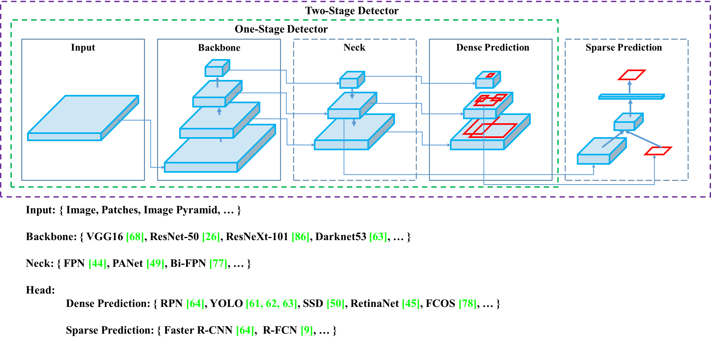

yolov4 勉強
YOLOv4: Optimal Speed and Accuracy of Object Detection
pdf: https://arxiv.org/pdf/2004.10934.pdf
abs: https://arxiv.org/abs/2004.10934
github: https://github.com/AlexeyAB/darknet
https://twitter.com/ak92501/status/1253481285865156613
BFLOPS = Gflops, and theoretical performance of CPU/GPU = ~40%
floating point operations per second (FLOPS, flops or flop/s)
Hello, I found your explanation of that number of BFLOPS at the end of initialisation.
Usually CPU and GPU has real performance ~40% of theoretical performance. For example, Yolo v3 416x416 has >Total BFLOPS 65.8. GPU nVidia GeForce GTX 970 has 3494 Gflops So GTX 970 should get about ~21 FPS = (40%/>100%) * 3494 / 65.8
Using this I tried to calculate FPS for 5-layers YOLO. I have an 1080ti ->10608.6 Gflops. My model gives me >total of 43.665 BFLOPS Using formula (40%/100%) * 10608.6 / 43.665 gives me 97,19 FPS In reality I get only >around 35 FPS. Is the calculation method for non standard YOLO is different? Thanks in advance!
モデルの量子化
AP50: Average Precision
mAP (mean Average Precision) for Object Detection
方針
基本的な流れと実験結果、結論を説明。
あとは、調べた用語や手法を説明すればよさそう。
BoF: Bag of Freebies
BoS: Bag of Specials
とかよくわかってない。
資料
[DL輪読会]YOLOv4: Optimal Speed and Accuracy of Object Detection
論文読み YOLOv4
Links
YOLOv4: Optimal Speed and Accuracy of Object Detection
pdf: https://arxiv.org/pdf/2004.10934.pdf
abs: https://arxiv.org/abs/2004.10934
github: https://github.com/AlexeyAB/darknet
https://twitter.com/ak92501/status/1253481285865156613
darknetの開発を行っているAlexey Bochkovskiy氏が、引退宣言をしたJoe Redmon氏の後を継ぎYOLOv4を発表。
だそうです。
https://twitter.com/icoxfog417/status/1253935022308032512
読む上でのポイント
https://github.com/mlnagoya/surveys/edit/feature/sample/00000000_sample/Sample_antimon2.md
よみよみ
- abstract
- universal
features include Weighted-Residual-Connections (WRC),
Cross-Stage-Partial-connections (CSP), Cross mini-Batch
Normalization (CmBN), Self-adversarial-training (SAT)
and Mish-activation - universal features that improve Convolutional Neural Network (CNN) accuracy
- ほとんどの models, tasks, and datasets に対して有効な features (CNN accuracy を改善する手法)
- We use new features: WRC, CSP, CmBN, SAT, Mish activation, Mosaic data augmentation, CmBN, DropBlock regularization, and CIoU loss, and combine some of them
- achieve state-of-the-art results: 43.5% AP (65.7% AP50) for the MS COCO dataset at a realtime speed of 65 FPS on Tesla V100.
- universal
- Figure 1
- YOLOv4 runs twice faster than EfficientDet with comparable performance.
- Improves YOLOv3’s AP and FPS by 10% and 12%, respectively.
YOLOv4: Optimal Speed and Accuracy of Object Detection
- Date: 2020-04-26
- Speaker: Hiroshi Nishigami
- Links:
はじめに
yolov3 の著者 pjreddie (Joseph Redmon) とは違う。
pjreddie は CV の研究から引退。
軍事利用やプライバシーの問題を無視できなくなったからだとか。
この論文 yolov4 の first author は、 darknet を fork して開発を続けていた人。
個人的な印象として、yolov4 と名乗っているだけで、正統な後継なの？という気はしている。（特に、pjreddie が公認しているという情報は見ていない）
たしかに、yolov3 を使っているが、たくさん組み合わせている手法の１つ。（まぁ、わかりやすい名前だからよいのか）
内容としてはまともで、たしかに良い性能が出せるモデルではあるらしい。
まぁ、darknet の継続開発をしてるから、名前はいいのかな。
広義のアーキテクチャ・手法の探索とチューニングを行った論文と言えるが、たくさんの手法が出てくるので、この分野の事前知識、前提知識がないとつらい。
（私も、物体検出や CV の専門家ではないので、つらい）
どうやら公認の模様
I am an AI developed by @pjreddie to complete his AI without his participation
https://twitter.com/alexeyab84/status/1264188352271613952
@alexeyab84 さんのこのつぶやきに対し、@pjreddie さんは like を押している。
おさらい
-
YOLO とは
- You only look once (YOLO): it looks for the image/frame only once and able to detect all the objects in the image/frame
- リアルタイム物体検出 (object detection) システム
- 昨今の、object detection のスタンダードな手法
-
darknet とは
- C で書かれたオープンソースのニューラルネットワークのフレームワーク
- 構築済み (学習済み) の yolo series が利用できる
どんなもの？（手法の概要）
- 最先端のテクニック・手法を (ある程度の仮説を立てながら) 総当たりで実験し、良いものを採用するための実験を行った (for single GPU)
- 性能が良かった組み合わせを採用して、YOLOv4 として提案
- 既存の高速(高FPS)のアルゴリズムの中で、最も精度が良い手法

- AP: mean average precision (mAP)
- YOLOv3 よりも精度が高く、EfficientDet よりも速い
どうやって有効だと検証した？（評価指標など）
以下の内容を検証（精度）
- Influence of different features on Classifier training
- Influence of different features on Detector training
- Influence of different backbones and pretrained weightings on Detector training
- Influence of different mini-batch size on Detector training
技術や手法の肝は？（手法のポイント）
- 以下のアーキテクチャ・手法の探索とチューニングを行った
- モデルアーキテクチャ
- backbone: 画像の特徴抽出の役割
- neck: backboneから受けた特徴マップをよしなに操作して、よりよい特徴量を生み出す
- head: クラス分類やbbox(物体を囲む四角形)の位置を予測する
- Bag of freebies
- 学習上の工夫
- Bag of specials
- 少ないコスト（推論時時間や計算リソースだと思われる）で大きな精度向上ができるもの
物体検出器のアーキテクチャ

- backbone: 画像の特徴抽出の役割
- neck: backboneから受けた特徴マップをよしなに操作して、よりよい特徴量を生み出す
- head: クラス分類やbbox(物体を囲む四角形)の位置を予測する
- headの部分は大きく1-stageか2-stageかに分かれる
- 1-stage: 直接的に予測を行う
- YOLO系列やSSD
- 速度重視
- 2-stage: 候補領域を出してから予測を行う
- R-CNN系列
- 精度重視
- 1-stage: 直接的に予測を行う
ネットワークアーキテクチャ
Backbone: CSPDarknet53
Neck: SPP、PAN
Head: YOLOv3
backbone: 画像の特徴抽出の役割
neck: backboneから受けた特徴マップをよしなに操作して、よりよい特徴量を生み出します
head: クラス分類やbbox(物体を囲む四角形)の位置を予測する
学習上の工夫 (Bag of freebies)と精度改善上の工夫 (Bag of specials)
- 活性化関数
- Mish acrivation
- bboxのregression loss
- CIoU-loss
- DIoU-NMS
- データオーグメンテーション
- CutMix
- Mosaic data augmentation
- Self-Adversarial Training
- 正則化
- DropBlock regularization
- 正規化
- CmBN
- その他
- Optimal hyper parameters
- Cosine annealing scheduler
- Class label smoothing
最終的に採用された手法
- Head: YOLOv3のHeadを採用
- Anchor-basedな手法
- Bag of Freebies(BoF, 学習時の手法)
- Backbone: CutMix, Mosaic data augmentation, DropBlock regularization, class label smoothing
- Detector(head): CIoU-loss, CmBN, DropBlock regularization, Mosaic data augmentation, self-adversarial training, Eliminate grid sensitivity, Using multiple anchors for a single ground truth, Cosine annealing scheduler, optimal hyperparameters, random training shape
- Bag of Specials(BoS, 推論時のテクニック・追加モジュール)
- Backbone: Mish activation, Cross-stage partial connection, Multi input weighted residual connection
- Detector(head): Mish activation, SPP-block(improved, 前述), SAM-block(improved), Pan path-aggregation block, DIoU-NMS 24 Methodology
議論、課題など
- detector の BoF を改善できる余地がある（future work）
- FPSが70~130程度あるが、V100の強めのマシンであることには注意が必要（既存のモデルに対するパフォーマンスがよいことには変わりない）
エッジ領域である、Jetson AGX XavierはFPSが割と小さく、TensorRTに変換及び量子化等の対応が必要
Jetson AGX Xavier上で32FPS程度
@Kmarconi @marcoslucianops You can use Yolov4 on tensorRT using tkDNN with 32 FPS(FP16) / 17 FPS(FP32) with batch=1 on AGX Xavier: #5354 (comment) With batch=4 FPS will be higher.
https://github.com/AlexeyAB/darknet/issues/5386#issuecomment-621169646)
- NVIDIA Tesla V100
先行研究と比べて何がすごい？（新規性について）
- アーキテクチャ・手法が object detection 性能に与える影響を調査した
- 既存の手法よりも良い手法を提案した (YOLOv4)
- YOLOv3 と同程度に速く、より高い精度
- EfficientDet より速く、同程度の精度
- 速度重視で物体認識モデルを考えるのであれば、選択の筆頭候補ということになる
関連する論文
- Reference の他の論文で読んだ方が良さげなものをピックアップ
-
Web で公開されている論文ならリンクにする
- サブリストでそれがどんな論文か一言あるとBetter
- network
- Mish
参考資料
- yolov4 の日本語解説資料
- 英語解説記事
- yolov3 architecture: A Closer Look at YOLOv3